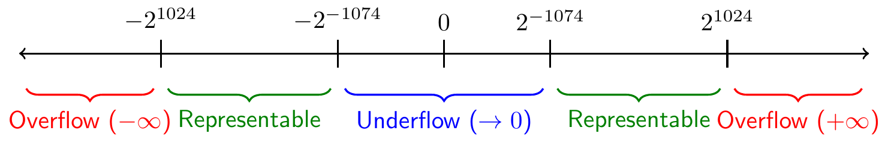
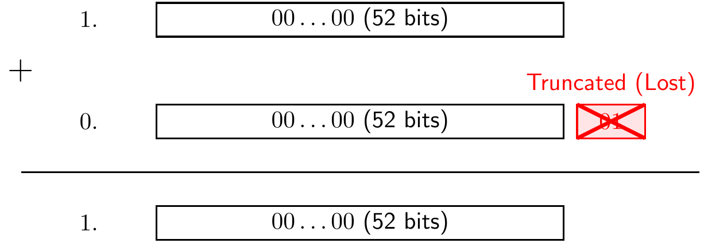

An integer \(u\) is represented by a vector of binary numbers \((d_0,\ldots,d_{31})\) as follows: \[
u=\sum_{i=0}^{31} d_i2^i - 2^{31}.
\] A 32-bit integer uses bits for representation, where the maximum is \(2^{31}-1\) and the minimum is \(-2^{31}\). The largest integer is, \[
u^{max}=\sum_{i=0}^{31} 1\times 2^i - 2^{31}=2^{31}-1.
\] The smallest integer is, \[
u^{min}= - 2^{31}\approx -(2^{31}-1).
\]
The following chunk tests these limits in R. R uses 32-bit signed integers. When we attempt to cast a number larger than \(2^{31}-1\) to an integer, R will return an NA and produce a warning because the value exceeds the maximum allowable threshold.
## Check upper boundsas.integer(2^31) # Exceeds limit, returns NA
[1] NA
as.integer(2^31-1) # Maximum valid integer
[1] 2147483647
as.integer(2^31-1) +as.integer(1) # Overflows to NA
[1] NA
## Check lower boundsas.integer(-(2^31-1))
[1] -2147483647
as.integer(-2^31 ) # Minimum valid integer
[1] NA
as.integer(-2^31-1 ) # Exceeds lower limit, returns NA
[1] NA
2.1.2 Floating point numbers
A floating-point number consists of a sign, mantissa, and exponent. A floating point number \(x\) is reprented by a vector of binary numbers \((s,d_0,\ldots,d_{t-1},e_1,\ldots, e_{k-1})\) as follows: \[
x = (-1)^s \sum_{i=0}^{t-1}d_i2^{-i}\times 2^{\sum_{i=0}^{k-1}e_i2^i-2^k}.
\]
Typically, in double precision (64bits), \(t= 52\) and \(k=11\). The extreme limits are represented on a number line where values beyond \(2^{1024}\) fall into overflow (Infinity), and values below \(2^{-1074}\) fall into underflow (Zero).

A Model for Understanding Floating Point Numbers: Overflow and Underflow Regions
We can observe how R behaves at these extreme boundaries. Once we hit \(2^{1024}\), the number is too large to store and becomes Inf (Infinity). Conversely, when we drop below \(2^{-1074}\), the precision runs out and the number rounds exactly to 0.
## checking the largest double precision floating-point number: 2^1023
2.2.1 Computing sum: avoiding computing large + small
The mantissa has a finite capacity, meaning adding something extremely small like \(2^{-54}\) to \(1\) risks truncation because the bits fall outside the representable range. For example, in base 10 with 4 digits of precision, \(1.000 \times 10^4 + 0.0001 \times 10^4\) evaluates to \(1.000 \times 10^4\), losing the smaller term entirely.

Visualizing Roundoff Error: Large + Small Numbers
Below, f2 attempts to add \(2^{-53}\) iteratively, but because \(1 + 2^{-53} = 1\) at every single step, the final sum is simply \(1\). To fix this, we can group the small numbers and add them together before adding them to the large number (f6s).
#### demo of roundoff error: avoid large +- small## a number f0f0 <-1+2^(-40)f0
[1] 1
f1 <-1i <-1while(i <=2^12){ f1 <- f1 +2^(-52) i <- i +1}f1
[1] 1
## A method that will give your wrong answer due to lost precisionf2 <-1i <-1while(i <=2^13){ f2 <- f2 +2^(-53) i <- i +1}f2
[1] 1
## this difference is not due to number display in R:f0 == f1
[1] TRUE
f0 == f2
[1] FALSE
## R built-in function 'sum' uses internal precision techniquesf3 <-sum (c(1, rep (2^(-53),2^13)))f3
[1] 1
f1 == f3
[1] FALSE
f4 <-sum (c(1, rep (2^(-54),2^14)))f4
[1] 1
f0 == f4
[1] FALSE
## a possible solution is to accumulate the small numbers first before adding to 1f6s <-0i <-1while(i <=2^14){ f6s <- f6s +2^(-54) i <- i +1}print (f6s)
[1] 9.094947e-13
f6 <- f6s +1; f6
[1] 1
We can use the log() function to see how the 52-bit limit translates into other bases, such as base \(e\) or base \(10\). This tells us roughly at what decimal place we lose precision (around 15-17 decimal digits).
## base= exp(1) = 2.71log(2^(-52))
[1] -36.04365
1+exp (-35)
[1] 1
1+exp (-37) # Evaluates to exactly 1 due to precision loss
[1] 1
## based 10log(2^(-52),base=10)
[1] -15.65356
2.2.2 Computing exp (x): avoiding computing large - large
The Taylor series for \(e^x \approx 1 + x + \frac{x^2}{2!} + \dots + \frac{x^k}{k!}\) works well for \(x > 0\), but fails for \(x < 0\) due to alternating signs causing catastrophic cancellation. To compute \(e^{-x}\) safely when \(x > 0\), we calculate \(\frac{1}{e^x}\).
Below, we test our custom fexp function. It has been updated so that when debug = TRUE, it returns a matrix of the internal steps rather than just the final answer.
library(knitr)fexp <-function(x, debug=FALSE) { i <-0 expx <-1 u <-1if (debug) debug_list <-list()while(abs(u)>1e-20*abs(expx)) { i <- i+1 u <- u*x/i expx <- expx+uif (debug){ debug_list[[i]] <-c(Step = i, Term_u = u, exp_x = expx) } }if (debug) {return(do.call(rbind, debug_list)) } expx}## Test the function over a range of positive and negative valuestest_vals <-c(10, 20, 60, -1, -10, -20, -50)res1 <-data.frame(x = test_vals,Built_in_Exp =exp(test_vals),Taylor_fexp =sapply(test_vals, fexp))kable(res1, caption ="Comparison of built-in exp() vs naive Taylor series fexp()")
Comparison of built-in exp() vs naive Taylor series fexp()
x
Built_in_Exp
Taylor_fexp
10
2.202647e+04
2.202647e+04
20
4.851652e+08
4.851652e+08
60
1.142007e+26
1.142007e+26
-1
3.678794e-01
3.678794e-01
-10
4.540000e-05
4.540000e-05
-20
0.000000e+00
0.000000e+00
-50
0.000000e+00
1.107293e+04
Notice how fexp(-50) yields a completely wrong, negative number. Let’s run it in debug mode and look at a table of the first and last 10 steps to see the massive terms canceling each other out.
## See what's happening at x = -50debug_matrix <-fexp(-50, debug =TRUE)## Combine the first 10 and last 10 rows for a readable tabledebug_summary <-rbind(head(debug_matrix, 10),matrix(NA, nrow =1, ncol =3, dimnames =list("...", colnames(debug_matrix))), # divider rowtail(debug_matrix, 10))kable(debug_summary, caption ="Debug trace for fexp(-50) showing catastrophic cancellation")
Debug trace for fexp(-50) showing catastrophic cancellation
Step
Term_u
exp_x
1
-5.000000e+01
-4.900000e+01
2
1.250000e+03
1.201000e+03
3
-2.083333e+04
-1.963233e+04
4
2.604167e+05
2.407843e+05
5
-2.604167e+06
-2.363382e+06
6
2.170139e+07
1.933801e+07
7
-1.550099e+08
-1.356719e+08
8
9.688120e+08
8.331401e+08
9
-5.382289e+09
-4.549149e+09
10
2.691144e+10
2.236230e+10
…
NA
NA
NA
[158,]
158
0.000000e+00
1.107293e+04
[159,]
159
0.000000e+00
1.107293e+04
[160,]
160
0.000000e+00
1.107293e+04
[161,]
161
0.000000e+00
1.107293e+04
[162,]
162
0.000000e+00
1.107293e+04
[163,]
163
0.000000e+00
1.107293e+04
[164,]
164
0.000000e+00
1.107293e+04
[165,]
165
0.000000e+00
1.107293e+04
[166,]
166
0.000000e+00
1.107293e+04
[167,]
167
0.000000e+00
1.107293e+04
To fix this, we can calculate \(e^{|x|}\) (which avoids alternating signs and catastrophic cancellation) and then invert the final result if \(x\) was negative.
### using another expression to avoid computing large - largefexp2 <-function(x) { xa <-abs(x) i <-0 expx <-1 u <-1while(u>1e-20*expx) { i <- i+1 u <- u*xa/i expx <- expx+u }if (x >=0) expx else1/expx}test_vals_neg <-c(-10, -20, -50)res2 <-data.frame(x = test_vals_neg,Built_in_Exp =exp(test_vals_neg),Robust_fexp2 =sapply(test_vals_neg, fexp2))kable(res2, caption ="Comparison using robust fexp2() for negative values")
Comparison using robust fexp2() for negative values
x
Built_in_Exp
Robust_fexp2
-10
4.54e-05
4.54e-05
-20
0.00e+00
0.00e+00
-50
0.00e+00
0.00e+00
2.2.3 Computing variance: avoiding computing large - large
Using the computational formula \(\sum_{i=1}^n x_i^2 - \frac{(\sum x_i)^2}{n}\) fails when data is shifted by a large constant \(M\), as the terms grow proportionally to \(M^2\) (e.g., \((M+1)^2\)), causing catastrophic cancellation. The two-pass formula \(\sum_{i=1}^n (x_i - \overline{x})^2\) centers the data first and avoids this completely.
## Naive computational formulavar1 <-function(x) { n <-length(x)( sum(x^2) -sum(x)^2/n ) / (n-1)}## Two-pass formula (centering on the mean)var2 <-function(x){ n <-length(x)sum((x-mean(x))^2) / (n-1)}## Small data works fine for bothx <-c(1,2,3)c(var1(x), var2(x), var(x))
[1] 1 1 1
## Adding a massive shift exposes catastrophic cancellation in var1x <-c(1,2,3) +1e10c(var1(x), var2(x), var(x))
[1] -32768 1 1
2.3 Methods for Mitigating Overflow and underflow Errors
2.3.1 Changing Algebraic Expression
In expressions like \(\frac{e^x}{1 + e^x}\), evaluating at a large positive value yields \(\frac{\text{Inf}}{\text{Inf}}\), which evaluates to NaN. Evaluating at a large negative value allows \(e^x\) to safely underflow to \(0\), yielding \(\frac{0}{1+0} = 0\).
By algebraically rewriting the formula as \(1 / (1 + e^{-\theta})\), a large positive \(\theta\) results in \(e^{-\theta}\) underflowing harmlessly to \(0\). The formula then easily computes \(1 / (1 + 0) = 1\).
### demo of overflow problem: avoid Inf/Inf, 0/0p1 <-function(theta){exp(theta)/(1+exp(theta))}p2 <-function(theta){1/(1+exp(-theta))}## Large positive theta breaks p1, works in p2theta <-2000p1(theta)
[1] NaN
p2(theta)
[1] 1
## Large negative theta works fine for both theta <--2000p1(theta)
[1] 0
p2(theta)
[1] 0
2.3.2 Log-Sum-Exp Trick
Multiplying many small probabilities, such as \(\prod_{i=1}^{2000} p(x_i) = (\frac{1}{2})^{2000}\), guarantees underflow to 0. We can represent numbers in logarithmic form \(l_x = \log(x)\) to handle products and quotients safely: \(\log(x_1 \cdot x_2) = l_1 + l_2\) and \(\log(\frac{x_1}{x_2}) = l_1 - l_2\).
However, sometimes we need to add numbers in log-space: calculating \(\log(e^x + e^y)\). Doing this directly reintroduces overflow. To compute \(\log(\sum_{i=1}^n e^{l_i})\), factor out the maximum \(m = \max(l_i)\) to get \(m + \log(\sum_{i=1}^n e^{l_i - m})\). For example, with exponents 2000, 2001, and 2002, factoring out 2002 leaves safe terms like \(e^{-2} + e^{-1} + e^0\). For subtraction, \(\log(x - y) = \log(e^{l_x} - e^{l_y})\) can be factored as \(l_x + \log(1 - e^{l_y - l_x})\) given \(x > y\).
log_x <-800x <-exp(log_x)x # Overflow!
[1] Inf
log_y <-805y <-exp(log_y)y # Overflow!
[1] Inf
## Direct division evaluates to NaN because Inf/Infx/y
[1] NaN
## Subtracting logs works safelylog_xovery <- log_x- log_ylog_xovery
## Values that would underflow directlylog_x <--c(2000,2010,2030)exp(log_x) # Produces 0
[1] 0 0 0
log_sum_exp(log_x) # Safe calculation
[1] -2000
## Similarly, we can build a safe log-minus-exp function: log(e^x - e^y)log_minus_exp <-function(log_x,log_y){ if(log_x < log_y)stop("The first argument is bigger than the second") log_x +log(1-exp(log_y-log_x))}log_minus_exp(2020,2000)
[1] 2020
## Direct subtraction overflowsexp(2000) -exp(1999)